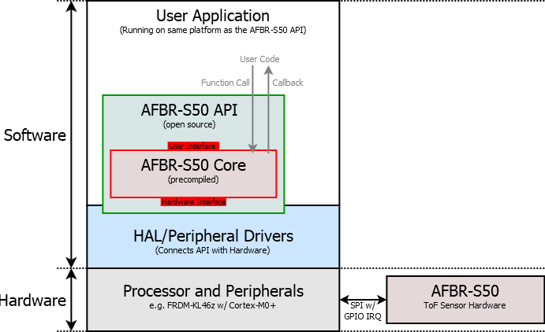

Overview
See the Fig. 2.1 for an brief overview on the integration of the AFBR-S50 Core Library and API into the users application and hardware platform. The architecture is split into two parts: hardware and software. The hardware contains the AFBR-S50 sensor device. It is connected to the processor and its peripherals via an SPI interface. An additional GPIO pin is required for the measurement data ready event from the sensor device.
The software that runs on the processor is essentially build from three parts: The user application, holding application specific code, is implemented by the user. The AFBR-S50 Core Library consists of sensor hardware specific code, an corresponding API and the hardware abstraction layers (HAL). The latter defines the required interface for the AFBR-S50 Core Library to access the hardware and is implemented platform dependent in the user application.
The AFBR-S50 Core Library comes as a pre-compiled ANSI-C library (i.e. a "lib\*.a" file) file that contains all data and algorithms required to run the sensor hardware. It is wrapped within an API that allows the user to access the internal functionality of the core library to control the device. The user application will basically access the core functionality via function calls through the API and has further the opportunity to install callbacks within the core in order to get informed about events in the library, e.g. new measurement data ready or other status changes.
The AFBR-S50 Core Library requires access to the hardware peripherals to communicate with the sensor device. Dedicated platform interfaces are defined by the API and need to be implemented by the user based on the underlying hardware platform.

Fig. 2.1: An overview of the *AFBR-S50 SDK* architecture for integration into an user application.
Operation Principle
The basic operation principle of the AFBR-S50 Core Library is described below:
- Measurement routines are running asynchronously in the background and notify the user application via a callback when a measurement has finished and new raw measurement data is ready to be used. The measurements are triggered either by a periodic timer interrupt at a fixed frame rate or by a dedicated function call from the user application. The actual measurement sequence is driven by short interrupt service routines and therefore the main processor tasks are not blocked while measurements are ongoing.
- The evaluation of the raw measurement data is executed independently of the measurement activity. When the main task is informed about the new raw measurement data ready event from the core by callback, it can call the evaluation routine whenever appropriate. However, the raw data buffer is blocked until the data is evaluated. Thus, not calling the evaluation routine blocks the start of new measurement frames. A double buffer architecture is utilized in order to allow interleaved execution of measurements and evaluation tasks.
- After calling the evaluation routine, the Measurement Data is ready and calibrated. The raw data buffer is empty and ready to be used with a new measurement frame to be performed on the device.
- In order to adopt to different operating conditions in different user application cases, the Configuration or Calibration parameters can be applied via the API layer. Default configuration and calibration data sets, called Measurement Modes, are provided for many use cases. These default settings can be fine tuned to the actual customers requirements.
- The Dynamic Configuration Adaption (DCA) feature is provided to automatically adopt to changing environment parameters, such as target reflectivity, ambient light or temperature. This feature highly increase the dynamic measurement range.
- The final evaluated measurement data obtained from the API consists of 3D data, i.e. range and amplitude per pixel, as well as 1D data, i.e. range and amplitude evaluated from a certain number of pixels. The selection of the pixels to determine the 1D data is realized via the Pixel Binning Algorithm (PBA) module.
- Calibration algorithms are applied within the evaluation sequence and to the device configuration in order to compensate environmental influences or device-to-device deviations. Each device comes with its individual factory calibrated values in an EEPROM that is read and applied in by the Calibration module.
- Auxiliary measurement tasks are utilized to obtain information about the system health and the environment (e.g. temperature or ambient light conditions) and adopt the system correspondingly. These measurements are automatically executed in the background after each measurement cycle.
- A Dual-Frequency Mode (DFM) is provided to overcome the limited unambiguous range issue and remove ghost pictures.
- Eye-Safety is derived from the static default configuration and adopted to any configuration changes made via the API. Also the DCA module heeds the laser safety limits. A timeout will watch the system responsiveness and the Reference Pixel is used to monitor the health state of the laser source. A system shut down is triggered in case of any failure, e.g. a laser short circuit.
API Modules
The AFBR-S50 Core Library contains a comprehensive set of routines and algorithms to run the AFBR-S50 Time-of-Flight Sensor devices. The functions and objects are defined and implemented in the AFBR-S50 Main API module. It consists of several submodules that handle specified tasks, such as
In order to provide a portable API library, the platform specific driver and HAL implementations are not included into the library. Instead, the connection to the hardware is obtained via the implementation of provided interfaces for the required hardware and peripherals. In detail, the hardware requirements are:
- S2PI: The communication with the device requires an SPI interface with additional GPIO capabilities. In order to increase speed and lower the CPU load, it is recommended to us a DMA module along with the SPI interface. In order to get informed about the measurement data ready event, a single GPIO IRQ is required and incorporated into the SPI module. In order to decrease the complexity for connections (in terms of wires required), the devices EEPROM is connected to the SPI pins but speaks a different protocol. In order to enable the calibration data readout from the EEPROM, the SPI pins must be accessed as GPIO pins in order to emulate the protocol by software bit banging algorithms. All these, i.e. SPI and GPIO, are summarized in the S2PI module.
- Timer: In order to heed the laser safety limits, a timer for time measurements concerns is mandatory. Note that this timer must be setup carefully in order to guarantee the laser safety to be within Class 1. Furthermore, a periodic interrupt timer can be used to trigger measurements autonomously in the background on a time based schedule. This is optional, since for simple implementations it might be sufficient to start the measurements on demand from the foreground threads by calling the corresponding API function.
- IRQ: In order to prevent race conditions and such, the program must be able to lock the occurrence of interrupts in atomic or critical sections of the code.
- Logger: Optionally, the logger module can be implemented and utilized to obtain debug information from the API operation. This is done by a printf-like function.
- Non-Volatile Memory: If user calibration is used, it is recommended to implement the interface to access a non-volatile memory peripheral (e.g. flash memory). If implemented, the user calibration data (e.g. crosstalk vectors) can be stored within the Core Library and will be automatically reloaded after device initialization (e.g. after a power cycle). If not implemented, the user can manage the calibration and configuration via the API.
Finally, there are some utilities implemented to help the user to adopt to the API architecture:
- Fixed Point Math: A small and effective fixed-point library containing essential algorithms and definitions.
- Time Utilities: Methods to handle the specified time format provided by the API.
- Misc. Utilities: Miscellaneous Integer Math like long (64-bit) multiplication or integer square root.